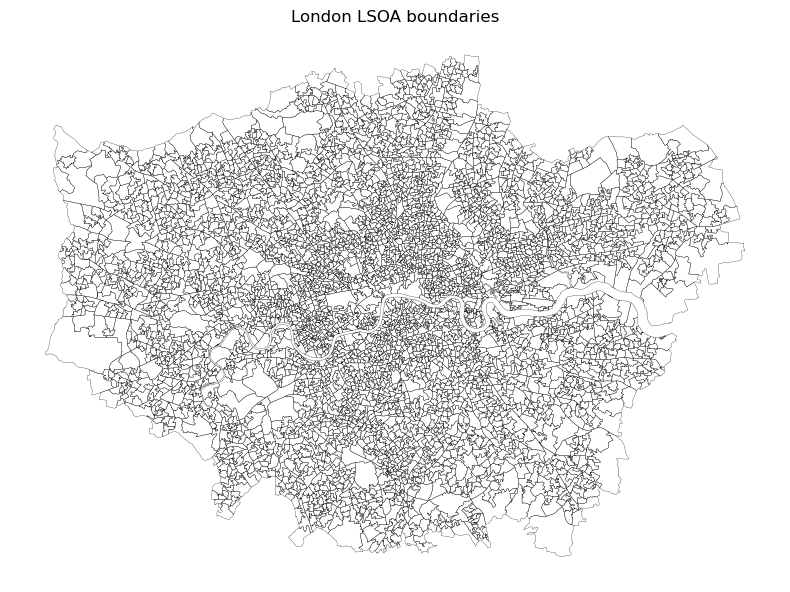
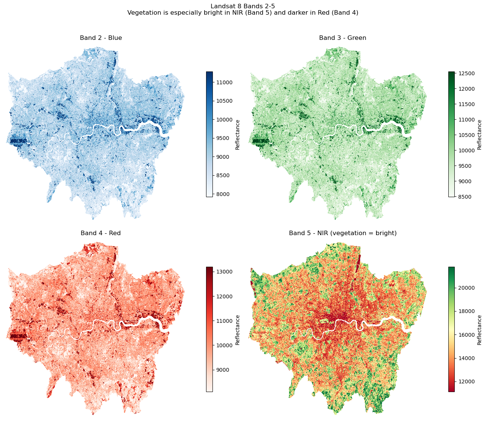
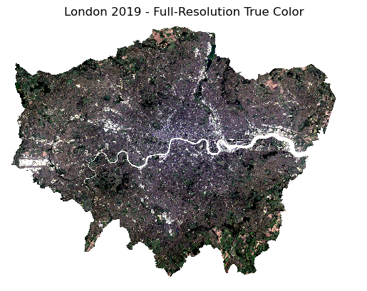
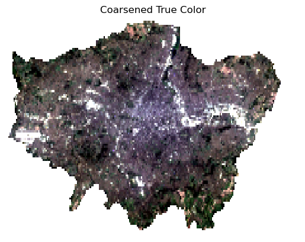
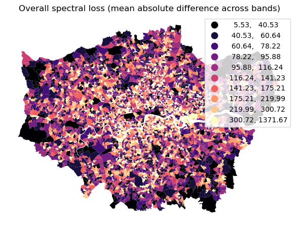
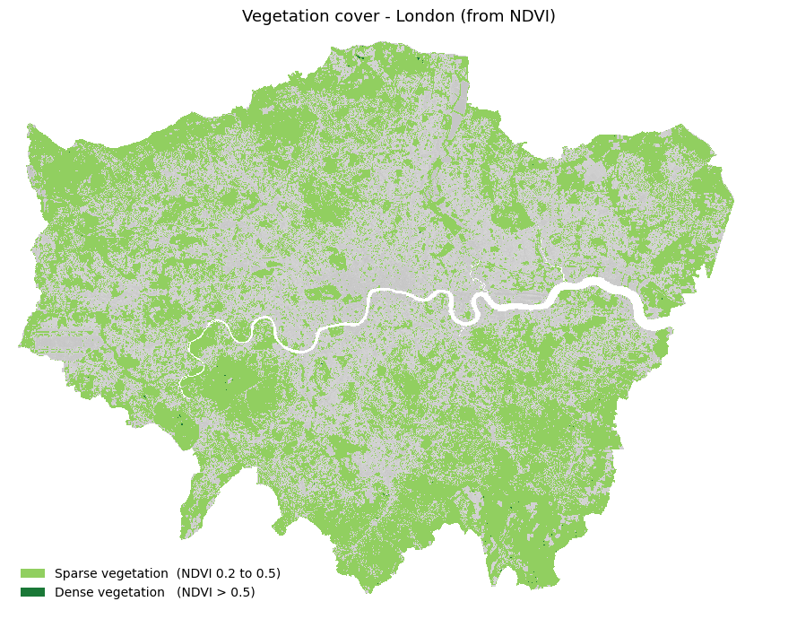

#!pip install numpy pandas geopandas xarray regionmask matplotlib # uncomment this to install the required libraries
%matplotlib inline
import numpy as np
import pandas as pd
import geopandas
import xarray as xr
import regionmask
import matplotlib.pyplot as plt
import matplotlib.colors as mcolorsLab 01: From Satellite Pixels to LSOA Features
This lab is divided into two connected parts:
- From Satellite Pixels to LSOA Features
- Building and comparing IMD deprivation prediction models using satellite-derived features and embeddings
Data
- Landsat 8 surface reflectance imagery over London (multispectral raster)
- LSOA boundaries (Lower Layer Super Output Areas), used as neighbourhood analysis units
Objectives
By the end of this lab, you should be able to: - Read and interpret multispectral raster data - Build neighbourhood-level features by aggregating pixel information to LSOAs - Explain and compute NDVI from Landsat bands - Evaluate the effect of spatial coarsening on feature quality
What We Will Cover
- Inspecting Landsat bands and visual composites (true colour and false colour)
- Loading and understanding LSOA geographies
- Deriving NDVI and simple vegetation classes
- Coarsening imagery and quantifying information loss
Workflow:
- derive pixel-level signals from satellite imagery, then
- aggregate them to LSOA-level features for later modelling.
Satellite imagery
london_landsat.nc contains surface reflectance for bands B1–B7 of Landsat 8, reprojected to EPSG:4326. We use the scipy engine because the standard netCDF4 C extension is not available in the WASM kernel.
sr = xr.open_dataset('london_landsat.nc', engine='scipy')['SR']
sr<xarray.DataArray 'SR' (band: 7, y: 1141, x: 2314)> Size: 148MB
[18481918 values with dtype=float64]
Coordinates:
* band (band) object 56B 'B1' 'B2' 'B3' 'B4' 'B5' 'B6' 'B7'
* y (y) float64 9kB 51.7 51.7 51.7 51.7 ... 51.28 51.28 51.28 51.27
* x (x) float64 19kB -0.5196 -0.5192 -0.5189 ... 0.3434 0.3438 0.3441
Attributes:
AREA_OR_POINT: AreaLSOA boundaries: neighbourhood units for aggregation
LSOAs (Lower Layer Super Output Areas) are small statistical geographies in England and Wales, designed to represent neighbourhood-scale populations.
lsoa = geopandas.read_file('uk_lsoa_london_embeds_2020.geojson')[['LSOA21CD', 'geometry']]
fig, ax = plt.subplots(figsize=(8, 8))
lsoa.plot(ax=ax, facecolor='none', edgecolor='black', linewidth=0.2)
ax.set_title('London LSOA boundaries')
ax.set_axis_off()
plt.tight_layout()
plt.show()
Exploring individual Landsat bands
Before stacking bands into a colour composite, it is useful to inspect them one by one. Each band captures reflectance in a different part of the spectrum, so the same location can look very different depending on the wavelength we plot.
Here we focus on Bands 2 to 5 because they are the most useful for building visual intuition before computing NDVI:
- Band 2 (Blue): water tends to appear dark, while many built surfaces appear brighter.
- Band 3 (Green): vegetation becomes easier to distinguish.
- Band 4 (Red): vegetation is darker because chlorophyll absorbs red light.
- Band 5 (NIR): healthy vegetation is bright because it reflects near-infrared strongly.
# Plot Bands 2-5 in a 2x2 grid with matched colourmaps
# The percentile stretch makes each band easier to read visually.
BAND_GRID = {
'B2': ('Blues', 'Band 2 - Blue'),
'B3': ('Greens', 'Band 3 - Green'),
'B4': ('Reds', 'Band 4 - Red'),
'B5': ('RdYlGn', 'Band 5 - NIR (vegetation = bright)'),
}
fig, axes = plt.subplots(2, 2, figsize=(13, 11))
for ax, (band_name, (cmap, label)) in zip(axes.flatten(), BAND_GRID.items()):
band = sr.sel(band=band_name)
vmin = float(band.quantile(0.02))
vmax = float(band.quantile(0.98))
im = band.plot.imshow(ax=ax, cmap=cmap, vmin=vmin, vmax=vmax, add_colorbar=False)
ax.set_title(label, fontsize=12)
ax.set_axis_off()
fig.colorbar(im, ax=ax, fraction=0.03, pad=0.04, label='Reflectance')
plt.suptitle(
'Landsat 8 Bands 2-5\nVegetation is especially bright in NIR (Band 5) and darker in Red (Band 4)',
fontsize=12,
y=1.02,
)
plt.tight_layout()
plt.show()
True color view
Individual greyscale bands don’t convey much on their own. We stack three bands into an RGB composite:
| Composite | Red channel | Green channel | Blue channel | What it shows |
|---|---|---|---|---|
| True colour | Band 4 (Red) | Band 3 (Green) | Band 2 (Blue) | How the scene looks to the human eye |
| False colour (NIR) | Band 5 (NIR) | Band 4 (Red) | Band 3 (Green) | Vegetation appears red/pink; built-up appears cyan/blue |
- 1
- Extract red, green, blue bands
- 2
- Identify the 2nd and 98th percentile values
- 3
- Normalise to [0, 1]
- 4
- Clip outliers
- 5
- Display
- 6
- Style the map
- 7
- Explicitly render image
/opt/anaconda3/lib/python3.12/site-packages/matplotlib/cm.py:494: RuntimeWarning: invalid value encountered in cast
xx = (xx * 255).astype(np.uint8)
Area level Landsat statistics
We want one row per LSOA with the mean surface reflectance for each of the 7 bands — a 7-feature vector per area.
Computing this at full resolution (~30 m pixels, 1504 × 1943 grid) is memory-intensive in the browser. We use two approaches:
- Demo (below): coarsen the raster 8× before masking — fast enough to run live, slightly less precise
- Pre-computed (below): load
landsat_features.csv, computed offline at full resolution and bundled with the workshop
Coarsening the raster: simulating lower spatial detail
We coarsen the Landsat grid to examine how reducing spatial detail affects downstream features.
Conceptually: - High-resolution features preserve local variation - Coarse features average across larger areas and may lose fine-grained structure
This sets up a direct comparison of information loss and model sensitivity to spatial resolution.
sr_coarse = sr.coarsen(x=10, y=10, boundary='trim').mean()Display coarsened:
rgb_c = sr_coarse.sel(band=['B4', 'B3', 'B2'])
lo_c = rgb_c.quantile(0.02, dim=['x', 'y'])
hi_c = rgb_c.quantile(0.98, dim=['x', 'y'])
ax = (
((rgb_c - lo_c) / (hi_c - lo_c))
.clip(0, 1)
.plot.imshow()
)
ax.axes.set_axis_off()
ax.axes.set_title('Coarsened True Color')
plt.show()/opt/anaconda3/lib/python3.12/site-packages/matplotlib/cm.py:494: RuntimeWarning: invalid value encountered in cast
xx = (xx * 255).astype(np.uint8)
Create a mask from the polygons:
mask = regionmask.mask_geopandas(
lsoa.reset_index(), lon_or_obj=sr_coarse.x, lat=sr_coarse.y, numbers='index'
)Now we ‘clipped’ the satellite image (Landsat) to the London LSOA spatial extent. Next, we obtain the mean values for each satellite band by grouping by polygon (LSOA) and store as a DataFrame:
lookup = xr.DataArray(lsoa['LSOA21CD'], dims='mask')
lsoa_bands = sr_coarse.groupby(mask).mean()
coarse_features = (
lsoa_bands
.transpose('mask', 'band')
.assign_coords(LSOA21CD=lookup.sel(mask=lsoa_bands['mask']))
.swap_dims({'mask': 'LSOA21CD'})
.to_pandas()
.rename(columns=lambda c: f"{c.replace('B', 'band_')}_mean")
)coarse_features.head()| band | band_1_mean | band_2_mean | band_3_mean | band_4_mean | band_5_mean | band_6_mean | band_7_mean |
|---|---|---|---|---|---|---|---|
| LSOA21CD | |||||||
| E01000001 | 8966.640000 | 9258.050000 | 9838.020000 | 9920.495000 | 11621.940000 | 11189.960000 | 10286.865000 |
| E01000002 | 9054.840000 | 9402.040000 | 10033.790000 | 10178.840000 | 11514.410000 | 11217.720000 | 10201.770000 |
| E01000005 | 9334.375000 | 9586.560000 | 10074.365000 | 10262.380000 | 11300.580000 | 11471.105000 | 10803.195000 |
| E01000006 | 9043.180000 | 9264.775000 | 9864.355000 | 10054.790000 | 13138.710000 | 12456.925000 | 11202.825000 |
| E01000008 | 9323.353269 | 9644.123563 | 10438.256825 | 10474.614404 | 15472.981501 | 13372.111351 | 11445.466056 |
| ... | ... | ... | ... | ... | ... | ... | ... |
| E01035718 | 8835.293636 | 8903.346364 | 9577.610000 | 9404.807273 | 15827.323636 | 13282.000000 | 10744.366364 |
| E01035719 | 9315.236842 | 9601.723684 | 10207.052632 | 10313.644737 | 12117.381579 | 11623.039474 | 10687.013158 |
| E01035720 | 9312.350515 | 9570.350515 | 10178.412371 | 10343.762887 | 12834.597938 | 11956.762887 | 10876.536082 |
| E01035721 | 9573.020000 | 9864.100000 | 10630.630000 | 10847.180000 | 13281.920000 | 12579.310000 | 11403.220000 |
| E01035722 | 8966.576563 | 9150.801563 | 9743.609375 | 9731.459375 | 13338.746875 | 11819.851562 | 10444.467188 |
4503 rows × 7 columns
Full-resolution features (pre-computed)
landsat_features.csv was computed offline at full ~30m resolution1.
hires_features = pandas.read_csv('landsat_features.csv', index_col='LSOA21CD')Quantifying information loss after coarsening
To measure what is lost when moving from high-resolution to coarse-resolution features, we compare each spectral band at LSOA level.
For each band (for example B2, B3, B4), we match the same LSOA in both tables and compute: - Difference: coarse - hires for each LSOA - MAE (Mean Absolute Error): average absolute difference across LSOAs - RMSE: square-root of mean squared difference (penalises larger errors) - Bias: average signed difference (coarse - hires) - Correlation: how strongly coarse and hires still co-vary spatially
We then map band-wise differences (coarse - hires) and an overall loss score per LSOA, computed as the mean absolute difference across all bands.
# Compare coarse vs hires with explicit loss metrics and maps
hi = hires_features.copy()
co = coarse_features.copy()
# Ensure LSOA code is index in both tables
if "LSOA21CD" in hi.columns:
hi = hi.set_index("LSOA21CD")
if "LSOA21CD" in co.columns:
co = co.set_index("LSOA21CD")
common = hi.index.intersection(co.index)
hi = hi.loc[common]
co = co.loc[common]
bands = [str(b.data) for b in lsoa_bands["band"]]
rows = []
for b in bands:
c = b.replace("B", "band_") + "_mean"
d = co[c] - hi[c]
rows.append({
"band": b,
"MAE": d.abs().mean(),
"RMSE": np.sqrt((d ** 2).mean()),
"Bias(coarse-hires)": d.mean(),
"Corr": hi[c].corr(co[c]),
})
loss_tbl = pd.DataFrame(rows).set_index("band")
print(loss_tbl.round(4))
# plot losses for each band
# fig, axs = plt.subplots(1, len(bands), figsize=(3.8 * len(bands), 4))
# if len(bands) == 1:
# axs = [axs]
# for ax, b in zip(axs, bands):
# c = b.replace("B", "band_") + "_mean"
# diff = (co[c] - hi[c]).rename("diff")
# g = lsoa.join(diff, on="LSOA21CD")
# vmax = np.nanpercentile(np.abs(diff), 95)
# g.plot(column="diff", cmap="RdBu_r", vmin=-vmax, vmax=vmax, ax=ax, legend=True)
# ax.set_title(f"{b}: coarse - hires")
# ax.set_axis_off()
# plt.tight_layout()
# plt.show()
absdiff_cols = []
for b in bands:
c = b.replace("B", "band_") + "_mean"
colname = f"{c}_absdiff"
co[colname] = (co[c] - hi[c]).abs()
absdiff_cols.append(colname)
overall_loss = co[absdiff_cols].mean(axis=1).rename("overall_loss")
lsoa_loss = lsoa.join(overall_loss, on="LSOA21CD")
fig, ax = plt.subplots(1, 1, figsize=(6, 6))
lsoa_loss.plot(column="overall_loss", cmap="magma", scheme="quantiles", k=10, legend=True, ax=ax)
ax.set_title("Overall spectral loss (mean absolute difference across bands)")
ax.set_axis_off()
plt.tight_layout()
plt.show() MAE RMSE Bias(coarse-hires) Corr
band
B1 72.3630 111.8760 1.2471 0.9359
B2 84.6924 131.6247 0.6712 0.9292
B3 101.0521 158.8807 2.7049 0.9126
B4 131.0117 198.9454 0.3653 0.9163
B5 325.9171 460.0061 39.6608 0.9424
B6 197.2135 287.1083 20.7269 0.9324
B7 152.7375 230.9965 5.0186 0.8993
NDVI (normalised difference vegetation index)
NDVI is a classic vegetation indicator derived from Red and Near-Infrared (NIR) reflectance:
\[\n\text{NDVI} = \frac{\text{NIR} - \text{Red}}{\text{NIR} + \text{Red}} = \frac{\text{Band 5} - \text{Band 4}}{\text{Band 5} + \text{Band 4}}\n\]
Why this works: healthy vegetation strongly reflects NIR and absorbs Red light, pushing NDVI upward.
Typical interpretation: - NDVI < 0: water/cloud/snow-like responses - NDVI around 0 to 0.2: built-up or bare surfaces - NDVI around 0.2 to 0.5: sparse vegetation - NDVI > 0.5: denser healthy vegetation
# Compute NDVI from the xarray stack called sr
# Select the near infrared band, Band 5, and convert it to float32
nir = sr.sel(band='B5').astype('float32')
# Select the red band, Band 4, and convert it to float32
red = sr.sel(band='B4').astype('float32')
# Ignore divide by zero and invalid value warnings during the NDVI calculation
with np.errstate(divide='ignore', invalid='ignore'):
# Compute NDVI using the formula:
# NDVI = (NIR - Red) / (NIR + Red)
# If NIR + Red equals 0, return NaN to avoid division by zero
ndvi = xr.where((nir + red) == 0, np.nan, (nir - red) / (nir + red)).astype('float32')
# Print the minimum, maximum, mean NDVI value, ignoring NaN values
print(f"NDVI min: {float(ndvi.min(skipna=True)):.3f}")
print(f"NDVI max: {float(ndvi.max(skipna=True)):.3f}")
print(f"NDVI mean: {float(ndvi.mean(skipna=True)):.3f}")
# Plot the NDVI map using a red to yellow to green colour scale
ax = ndvi.plot.imshow(cmap='RdYlGn', vmin=-0.2, vmax=0.8, figsize=(8,6))
# Add a title to the plot
plt.title('NDVI (Band 5 vs Band 4)')
# Turn off the plot axes
plt.axis('off')
# Display the plot
plt.show()# ── Simple NDVI vegetation map ────────────────────────────────────────────────
# Classify each pixel into two vegetation categories:
# Sparse vegetation : 0.2 <= NDVI < 0.5
# Dense vegetation : NDVI >= 0.5
upper_threshold = 0.5
lower_threshold = 0.2
veg_map = xr.full_like(ndvi, np.nan, dtype="float32")
veg_map = xr.where((ndvi >= lower_threshold) & (ndvi < upper_threshold), 1, veg_map) # sparse
veg_map = xr.where(ndvi >= upper_threshold, 2, veg_map) # dense
cmap_veg = mcolors.ListedColormap(["#91cf60", "#1a7837"])
norm_veg = mcolors.BoundaryNorm([0.5, 1.5, 2.5], cmap_veg.N)
fig, ax = plt.subplots(figsize=(9, 7))
# Base NDVI with geospatial coordinates preserved
ndvi.plot.imshow(
ax=ax, cmap="Greys_r", vmin=-0.2, vmax=0.8, alpha=0.3,
add_colorbar=False
)
# Overlay vegetation classes on same coordinates
veg_map.plot.imshow(
ax=ax, cmap=cmap_veg, norm=norm_veg,
add_colorbar=False
)
ax.set_title("Vegetation cover - London (from NDVI)", fontsize=13)
ax.set_axis_off()
from matplotlib.patches import Patch
ax.legend(
handles=[
Patch(
facecolor="#91cf60",
label=f"Sparse vegetation (NDVI {lower_threshold} to {upper_threshold})"
),
Patch(
facecolor="#1a7837",
label=f"Dense vegetation (NDVI > {upper_threshold})"
),
],
loc="lower left", frameon=False, fontsize=10
)
plt.tight_layout()
plt.show()
Exercise
Let’s play with the NDVI thresholds to see how the map changes.
Change: upper_threshold and lower_threshold in the code above